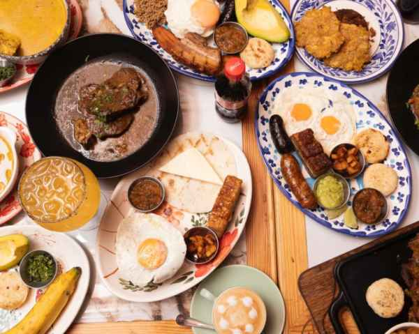
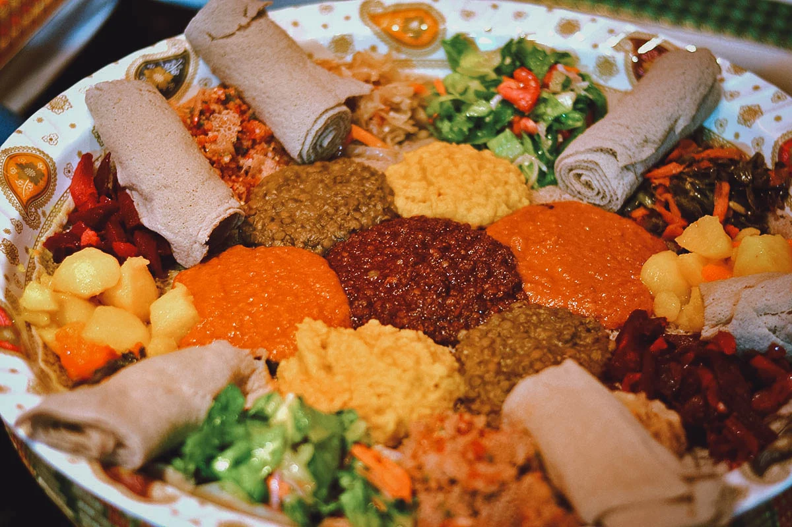
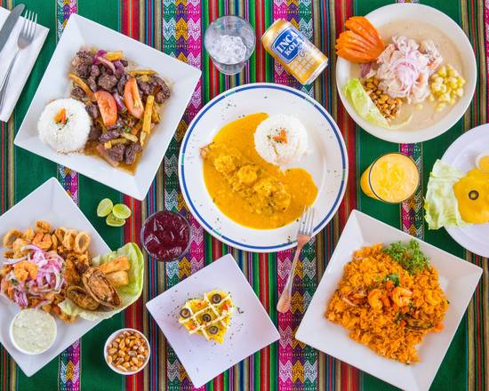

Welcome to CEP – A Culinary Trip Through Colombia, Ethiopia & Peru
At CEP, we invite you to experience a flavorful journey through three vibrant cultures. Each dish on our menu tells a story—rooted in tradition, crafted with passion, and served with warmth.
The only sport I really enjoy practicing is karate, though I haven’t been able to train lately due to a lack of time. When it comes to food, I’m not picky at all—I can eat just about anything, as long as it’s not too spicy (I don’t handle spice very well). I also enjoy cooking when I have the time, partly because I like to know exactly what I’m eating, and partly because I just have a lot of fun doing it.
Discover the richness of Colombian spices, the freshness of Peruvian cuisine, and the depth of Ethiopian flavors—all under one roof.
Ready for a trip of new flavors?!!!!!
A Taste of Colombia🥩
From the lush Andes to the Caribbean coast, Colombian cuisine is a fusion of cultures.At CEP, we serve traditional dishes like Bandeja Paisa, Ajiaco, and Arepas, prepared with authentic ingredients and love.
Don’t miss our homemade empanadas and refreshing aguapanela.
Ethiopian Soul on a Plate🍛
Ethiopia’s cuisine is communal, bold, and unforgettable. Dive into our spiced Doro Wat, enjoy the variety of vegetarian lentil stews, and savor the tangy softness of Injera.
At CEP, we recreate the warmth and tradition of Ethiopian gatherings with every bite.
The Heart of Peruvian Flavors🐟
Peruvian cuisine is world-renowned for its diversity and balance. At CEP, enjoy the freshness of Ceviche, the rich flavors of Lomo Saltado, and the comfort of Ají de Gallina.
Each dish brings the spirit of Peru to your table—with vibrant spices and Andean soul.
IMPORTANT !!!! ARE YOU AN INFLUENCER??
We're looking for passionate food lovers and content creators who are ready to dive into the vibrant flavors of Colombian, Peruvian, and Ethiopian cuisine! Whether you're into TikTok taste tests, Instagram reels, or honest YouTube reviews, we want you to help us share the magic of CEP with the world.
If you're hungry for new experiences and love sharing them with your audience — contact us! Let’s cook up something amazing together. 🍽️📸✨